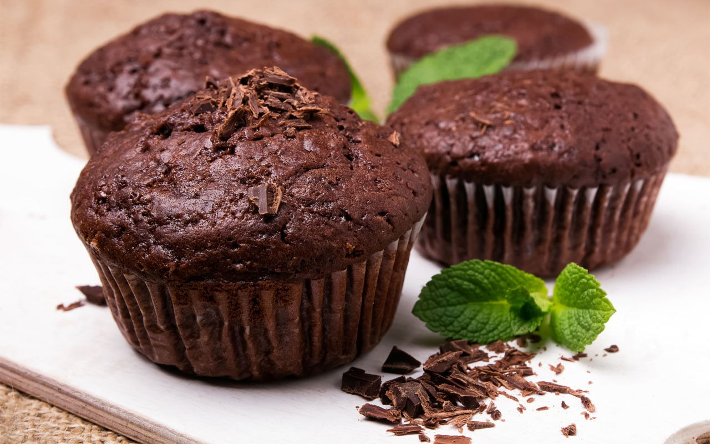

КОФЕ
- Американо – эспрессо обычный или двойной, в который после приготовления добавили (30–470 мл) горячей воды. Крепость зависит от количества шотов эспрессо. В Италии и Франции даже не пытайтесь просить Американо, вам принесут лунго.
Американо
- Кофе с молоком (it. Caffè latte, fr. Café au lait) – домашний напиток, который туристам часто приносят вместо Латте. В Польше называется Kawa biała (белый кофе), в Австрии – Меланж, по-французски произносится “кафэ-о-ле”, в Нидерландах Koffie verkeerd (неправильный кофе).

Кофе с молоком
- Эспрессо (также Normale) – напиток приготовленный с помощью рожковой эспрессо-машины. Принципиальные различия во вкусе достигаются благодаря более длительному времени экстракции, за которое в чашку (крое эфирных масел) попадает и большее количество кофеина.
Эспре́ссо
- Фраппе́ — покрытый молочной пеной холодный кофейный напиток греческого происхождения. Напиток наиболее известен под французским названием frappé и связан с разновидностью американского напитка под названием гранита.
Кофе фраппе́
- Капучино (it. Cappuccino, fr. Café crème) – эспрессо со вспененным молоком. Название происходит от ит. слова “капуцин” – отсылка к характерному красно-коричневому цвету роб у монашеского ордена капуцинов.
Капучи́но
- Латте (it. Caffellatte, fr. Grand crème, de. Milchkaffee) – международный напиток из эспрессо со вспененным молоком. В 240 мл стакан добавляют шот эспрессо, который заливают молоком с молочной пенкой. Толщина пенки 12мм.

Ла́тте
- Макиато — кофейный напиток, изготавливаемый из порции эспрессо и небольшого количества молока, обычно взбитого. Также известен как эспрессо макиато. Как и капучино, макиато является основой для латте-арта.

Макиато
- Ристре́тто, также иногда называемый корто, шранк, литерэлли или шот — эспрессо, в котором отношение массы напитка к массе перемолотого зерна ниже, чем в нормале и лунго. Для приготовления такого напитка требуется 7–11 г кофе на 15–20 мл воды
Ристрето
ДЕСЕРТЫ
- Тирамису́ — итальянский многослойный десерт, в состав которого входят: сыр маскарпоне, кофе, куриные яйца, сахар и печенье савоярди. Как правило, десерт припудривают какао-порошком. Возможна вариация с добавлением грецкого ореха.
Тирамису
- Круасса́н — небольшое мучное кондитерское изделие, булочка в форме полумесяца из слоёного теста с содержанием сливочного масла не менее 82 % жирности. Очень популярен во Франции.
Круасса́н
- Ма́ффин — американский вариант кекса, маленькая круглая или овальная выпечка, преимущественно сладкая, в состав которой входят разнообразные начинки, в том числе фрукты. Обычно маффин помещается в ладони взрослого человека. 
Ма́ффин
- Медовик — торт, распространённый в России и странах бывшего СССР. 1 медовик был создан в 1820году. Состоит из трёх медовых коржей с прослойкой из масляно-сметанного крема.
Медовик
- Наполео́н — популярный в России торт или пирожное из слоёного теста с масляным или заварным кремом.Во Франции и в Италии аналогичный торт называется Тысяча слоёв (фр. mille-feuilles [mil fœj]). В США — Napoleon, в Великобритании — Vanilla slice или Cream slice.
Наполео́н
- Чизке́йк (от англ. cheese «сыр» и cake «торт», буквально — «сырный пирог», «творожный пирог») — блюдо европейской и американской кухни, представляющее собой сыросодержащий десерт от творожной запеканки до суфле.
Чизке́йк
- Суфле́ — французское выпекаемое блюдо, основу которого составляют яичные желтки, смешанные со взбитыми в пену белками. Вместо желтков могут использоваться различные другие сваренные и измельчённые в пюре продукты: овощи, молочные продукты, мясо.
Суфле́
- Ва́фля — разновидность тонкого сухого печенья с оттиском на поверхности. Выпекается из взбитого жидкого теста в специальных формах. Тесто состоит из муки, яиц, сахара и сливок.Своё название вафли получили от средненижненемецкого слова «wâfel».
Ва́фля